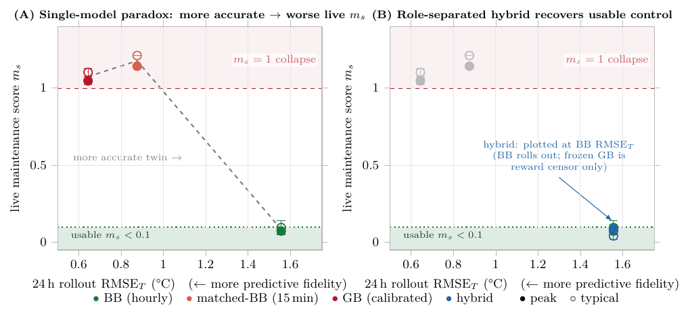
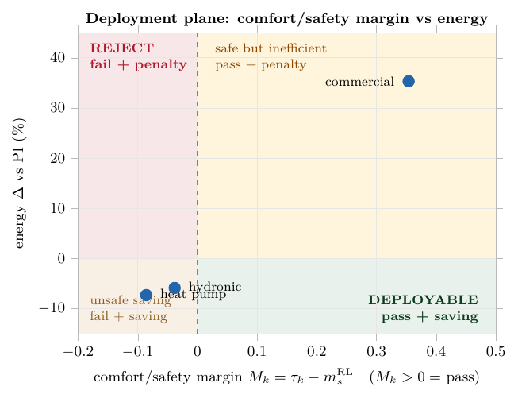
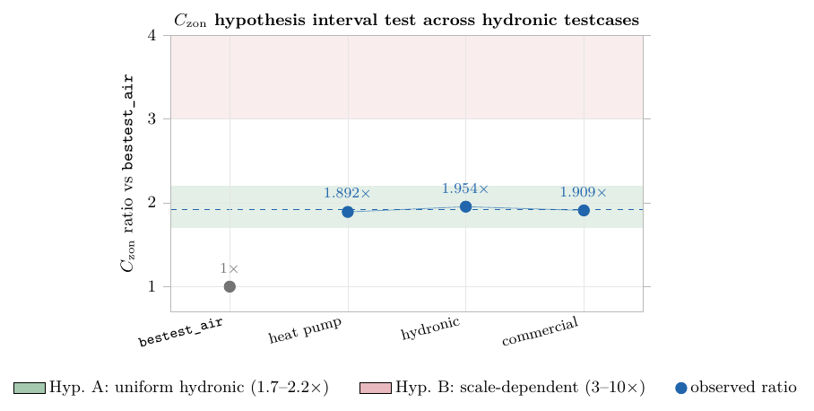
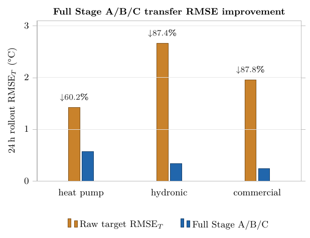
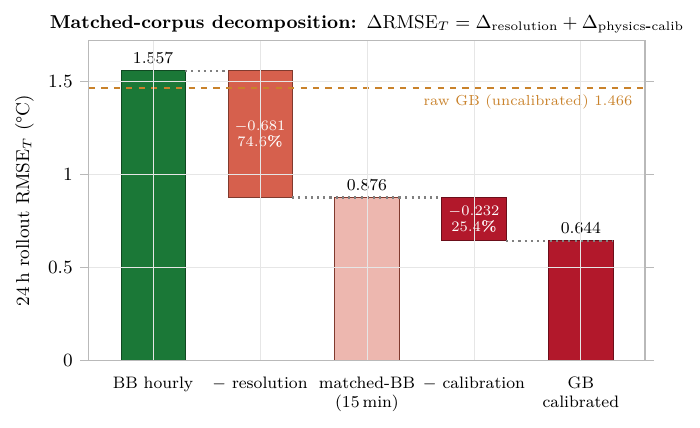
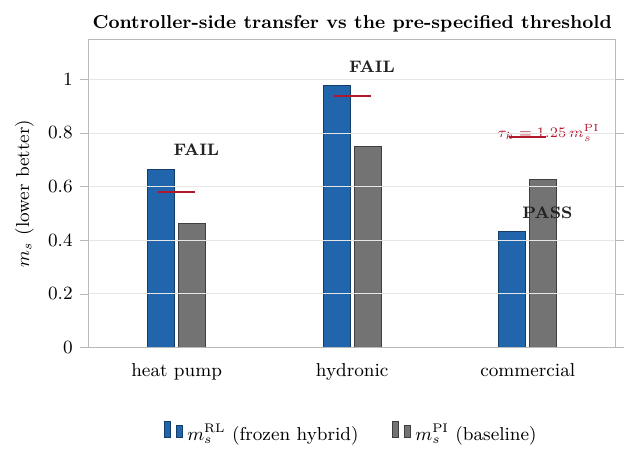

Data-driven из committed CSV · LaTeX-типографика (Latin Modern) · единый стиль _pgfstyle.tex · BB/GB-нейминг · siunitx-единицы · легенды снизу · страница сама обновляется каждые 30 с
2 панели: (A) single-model paradox — точнее модель, хуже live m_s; (B) hybrid возвращается в usable band. Зоны usable/collapse, пороги, peak/typical маркеры с error bars, аннотация hybrid. Данные из block2_fidelity_utility_scatter.csv.

Scatter margin M_k = τ_k − m_s^RL vs energy Δ, 4 интерпретируемых квадранта. Данные из block3_transfer_matrix.csv.

Scatter с полосами гипотез A/B и вычисленной из таблицы средней линией; значения ratio из CSV.

Сгруппированные столбцы, подписи ↓% из колонки rmse_improvement_pct.

BB hourly → matched-BB → GB calibrated; вклад resolution (74.6%) и Stage A/B/C calibration (25.4%) вычислены в самой фигуре из block1_corpus_matched_comparison.csv.

Столбцы m_s^RL / m_s^PI, красные штрихи-пороги, вердикты PASS/FAIL прямо из колонки none_controller_verdict.
